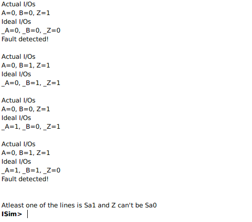

Theory Involved
Logic Gates
It is an electronic circuit having one or more than one input and only one output. The relationship between the input and the output is based on a certain logic. There are different kinds of logic gates. The project involved the following logic gates
- AND Gate
-
The AND gate gives us a HIGH output if and only if all the inputs to the AND gate are HIGH. If even one of the inputs to the AND gate is LOW then the output will be LOW. The function can be extended to any number of inputs. The truth table and boolean expression are as follows:

A B A.B 0 0 0 0 1 0 1 0 0 1 1 1 Q = A.B
- OR Gate
-
The OR gate gives us a HIGH output if and only if at least one of the inputs to the OR gate is HIGH. If all the inputs to the OR gate are LOW then the output will be LOW. The function can be extended to any number of inputs. The truth table and boolean expression are as follows:
Q = A+B
- NOT Gate
-
The NOT gate gives us a HIGH output if and only if the input to the NOT gate is LOW. If the input to the NOT gate is HIGH then the output will be LOW. The function can be extended to any number of inputs. The truth table and boolean expression are as follows:
A NOT A 0 1 1 0 Q = !A
- Stuck at Faults
-
When a signal, or gate output, is stuck at a 0 or 1 value, independent of the inputs to the
circuit, the signal is said to be “stuck at” and the fault model used to describe this type
error is called a “stuck at fault model”.
Stuck at faults occur when a line is permanently stuck to Vdd or ground giving a faulty output. This line may be an input or output to any gate. Also this fault can be single or multiple stuck at faults.
A fault model is an engineering model of something that could go wrong in the construction or operation of a piece of equipment. From the model, the designer or user can then predict the consequences of this particular fault. Basic fault models in digital circuits include the stuck-at fault model, the bridging fault model, the transistor faults, the open fault model, the delay fault model, etc. If a circuit has n signal lines, there are potentially 2n stuck-at faults defined on the circuit.
Our Approach
-
We used the Xilinx ISE Suite to create the simulation to test ‘stuck at’ faults in AND, OR and NOT gates. The entire simulation has been written in Verilog. Verilog is a hardware description language used to model electronic systems. It is most commonly used in the design and verification of digital circuits at the register-transfer level of abstraction.
We created a block of Verilog code that implemented the functionality to execute AND, OR and NOT operations for different inputs. We used built-in Verilog keywords and functions to do so. For example, for a 2 input AND gate, we declare three variables, _A, _B and _Z, and _Z is computed accordingly. The pseudo code looks something like this:
reg _A;
reg _B;
reg _Z;
assign _Z = _A * _B;The user can introduce faults in the gate and run simulations for all possible combinations using text fixtures. The ‘Fault Detection.xlsx’ file contains all the different possible inputs, faults and outputs.
Theoretically, for any gate, we have 2^(2^n) outputs, where n is the number of inputs. Let us take the example of a two input OR gate. We have 16 different outputs for it, as shown in the Fault Detection file.
However, a lot of the output combinations are impossible to recreate irrespective of the input/fault combination.
A B A+B 0 0 0 0 1 0 1 0 0 1 1 1 In this case, to get output as 0 for the inputs 0 and 1, we must either have Sa0 at the output pin or Sa0 for the second input pin. However, it cannot be either of them as, for the same set of faults, it is not possible to get output as 1 for inputs 1 and 1. We can extend the same for the input set 1 and 0. This is a redundant case.
We can extend the same to the AND and NOT gate. For the valid output set, to denote presence of faults, we use ‘D’ to denote don’t care, ‘X’ for okay, ‘0’ for Sa0 and ‘1’ for Sa1. (A, B, Z) ⇔ (input1, input2, output).
We introduce faults in the simulation by using the force keyword. Like the name suggests, the forced value persists even if there is any subsequent attempt to change it. We declare two sets of variables: (A, B, Z), the actual inputs and output and (_A, _B, _Z), the expected inputs and output.
We then compare the actual and expected output for all possible combinations of A and B and if they are unequal, we can safely say that there is some fault in the gate.
Based on the inputs and difference between actual and expected outputs, we try to deduce what might be the possible faults that exist in the gate. Let us again take the example of a 2 input OR gate.
A B A+B 0 0 0 0 1 0 1 0 0 1 1 0 In this case, the expected output for 0 1, 1 0 and 1 1 should have been 1, but the actual output comes out to be 0. So, either the output pin has a Sa0 fault with possible faults in the input pins as well or both the input pins have Sa0 faults with the output pin working properly. For different input/output sets, we can try to deduce the faults that might be present.
The possible faults that can be determined for the gate are logged in the console of the Xilinx simulation using the '$display' function. We can extend the same logic to the AND and NOT gates.
In the picture above it can be seen how the simulation predicted the faults which may be present in gate. It simulates the outputs for all possible combination of inputs and comparing it to the expected output, lists out the possible faults. For example, in this case, A had Sa0 fault and Z had Sa1 fault and the simulator rightly predicts "Atleast one of the lines is Sa1 and Z can't be Sa0"
Running the Simulation
- By default, the values of A and B are set to 0, the gate is set to AND and there are no faults present in any of the input/output lines.
- The user must choose the gate, the input line values and the faults present. Then, click on the 'RUN' button.
- If the output corresponding to the selected gate and inputs match with the expected output, the output is highlighted with a green background, else, it is displayed with a red background.
- For one input NOT gate, the user can only select the input for A, B is not considered. Similarly, the user cannot introduce a fault in the input line for B.
- The user can change the input dataset and again run the simulation. The previously computed output is stored until the page is refreshed, and hence can be used to compare different scenarios.
Simulator
Inputs:
Output Table:
| GATE | A | B | Expected output (Ze) | Z |
|---|